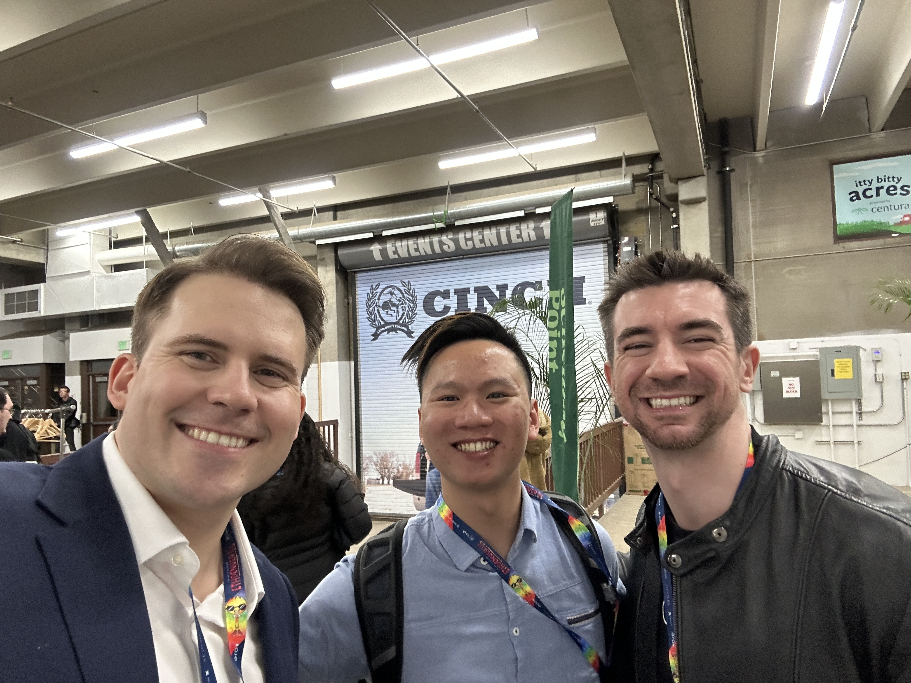
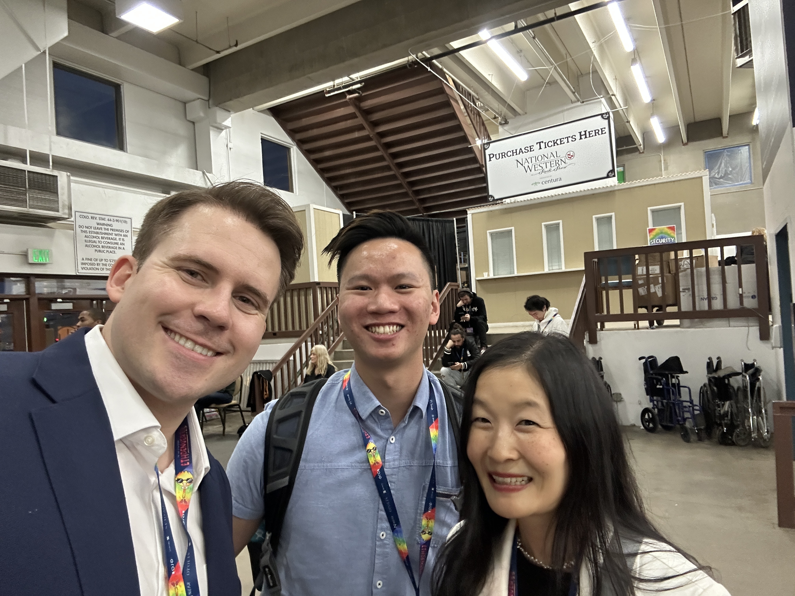
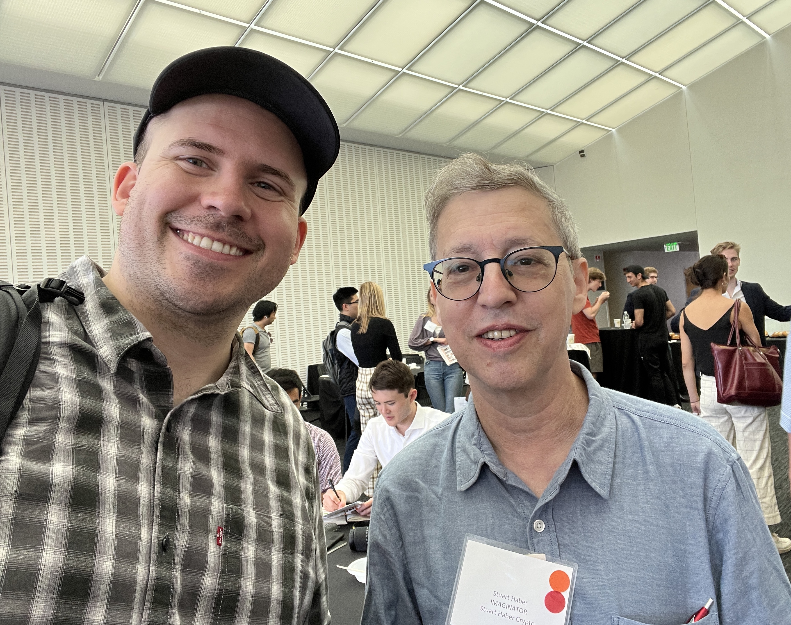
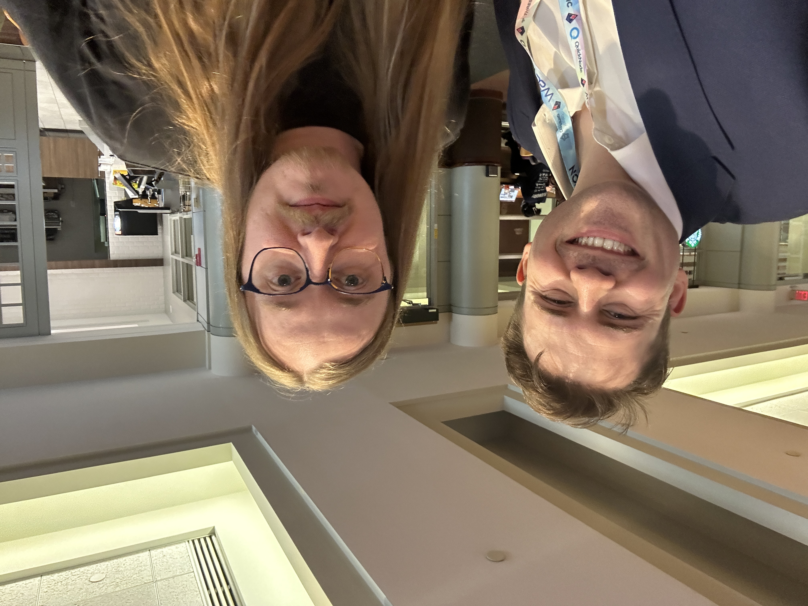

Web3, Blockchain, & Solidity
Web3 Fundraising
- I have extensive experience in the end-to-end process of building Web3 products from scratch driving them to and beyond fund raise stages.
- Have helped lead raises for new Web3 DeFi businesses totalling >$7 million across multiple projects.
- I led the Seed Round raise for Panoptic: $4.5M during the 2022 bear market(s).
- I run a Web3 Consulting Company as well and I offer my services as a Web3/crypto advisor to projects
- Reach out on Twitter (@cryptojesperk) if you're looking for help navigating your project from initial stages all the way to successfully closing your funding round!
Hackathons and Conferences
- ETH Denver 2023
- I presented Panoptic and gave the first live demo of the product.
- Patrick Collins, Panoptic Researcher Brandon Ly, and I:
 - Laura Shin, Panoptic Researcher Brandon Ly, and I:

- ETH Toronto 2022
- Wrote a simple ERC721 NFT contract leveraging IPFS to speed up development of main contract
- Wrote the Dyve contracts in Solidity to enable capital-efficient NFTs and shorting of NFTs
- ETH NYC 2022
- Winner of Best Defi from Polygon
- Winner of Just Deploy! from Optimism
- Winner of Best Use from Reservoir

- Austin Griffith and I - inventor of Scaffold-ETH and multiple great instructional videos on Ethereum:
- Stuart Haber and I - the co-inventor of the blockchain - he is referenced multiple times in the original Bitcoin whitepaper: 
- Evan Henshaw-Plath and I - the former boss of Jack Dorsey - the first employee at Twitter - he is building a decentralized twitter:

- Charles Hoskinson (center), my Panoptic co-founder Guillaume (right), and I. Charles is the co-founder of Ethereum and Founder of Cardano:
- Robert Leshner and I:
- James Prestwich and I: 


- I joined my co-founder Guillaume Lambert to present Panoptic (see video below).
Educating
- I run a Blockchain education YouTube channel
- This channel has reached thousands of viewers and subscribers
Public & Side Projects
- I collaborated on the development of an award-winning NFT capital-efficient & shorting protocol called Dyve
- I created using Hardhat a modified ERC20 protocol based on the OpenZeppelin standard here.
- I created an ERC1155 programmed purely in Yul (the low-level assembly-style language used in context of Solidity): Here is a walkthrough
- I created an NFT game and deployed it to Polygon - it is based on the ERC1155 standard, play the game here: The Forge of Chains Game
- I created an NFT Collection from scratch leveraging IPFS
- I created an NFT Staking contract where you can earn ERC20 Token staking rewards!
- I created a blockchain in Python (a Mockchain) for educational purposes: Python Blockchain Implementation
- A Lottery contract I wrote with a corresponding fake Random Number Generator (that mimics the Chainlink VRF): Lottery Contract
Formal Training & Certifications
- I was in one of the first cohorts of Rareskills.io. This is a 6-month (with curriculum extendable to a full year) intensive Solidity and Blockchain bootcamp - also considered a Fellowship. Have a look at the Curriculum here. It is very development-heavy (95%) which played a key role in my successful Web3 developer transition. I was featured in a post early on (when it was run under Metana, for context) here.
- Ethereum and Solidity: The Complete Developer's Guide
- Advanced Solidity: Understanding and Optimizing Gas Costs
- Advanced Solidity: Yul and Assembly
Private Projects / During Employment
- I am the co-founder and Chief Operating Officer of a novel DeFi options protocol called Panoptic
The whitepaper is accessible here on arXiv as well.Here is my presentation at ETH Denver 2023 with the first ever live demo of Panoptic: